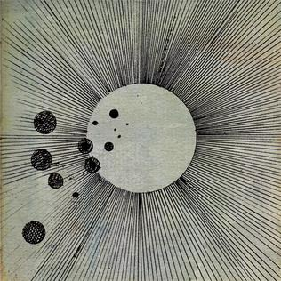
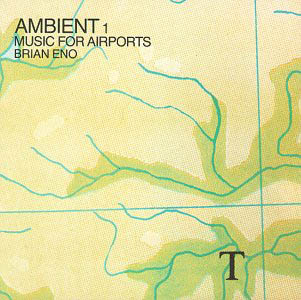
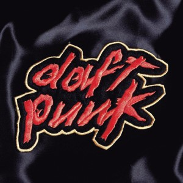
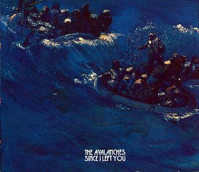
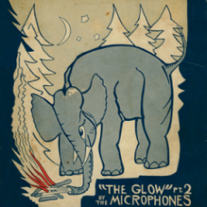
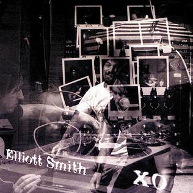

A Taste of my Tastes
Just to establish a baseline, and to try and skirt the ire of any angry music nerds that happen to find this page, here's my opinions of some classic electronic albums, as well as a couple of my favorite non electronic albums. If you disagree... thats okay, were all just people trying to enjoy the beautiful world of music.
| Album | Rating |
|---|---|
|

Cosmograma |
Strong 9 |

Selected Ambient Works 85-92 |
Light 8 |
|

Music for Airports |
Strong 10 |
|

Homework |
Strong 7 |
|

Since I Left Your |
Strong 9 |
|

The Glow pt. 2 |
Strong 10 |
|

X/O (and everything else he made) |
Strong 10 |